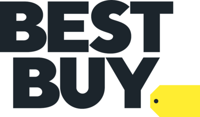
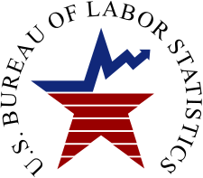
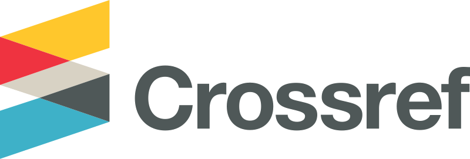
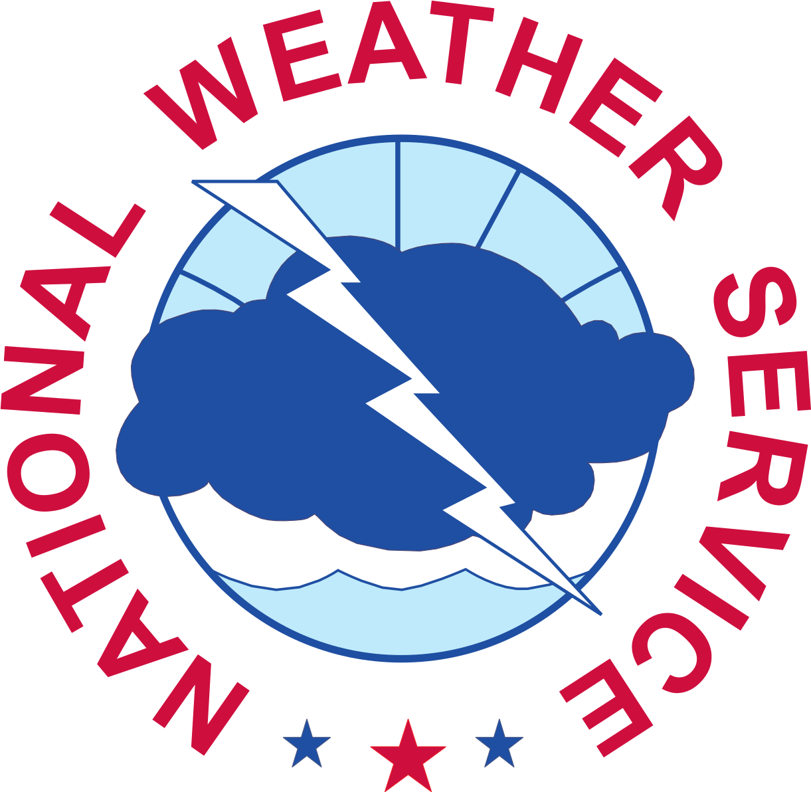
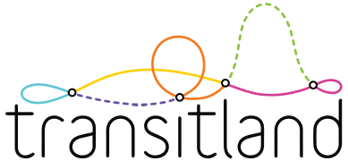

CoinGecko Crypto
Cryptocurrency market data — prices, volumes, market caps for thousands of tokens.
DefiLlama DeFi
DeFi protocol analytics — TVL, yields, fees, volumes across all major chains and protocols.
Polymarket Predictions
Prediction market data — real-time odds and volumes for events across politics, crypto, sports.
Finnhub Stocks
Real-time stock market data — US equities, forex, and crypto with company fundamentals.
 Finance
Finance
Nasdaq Listings
Official Nasdaq exchange data — listed securities, ETFs, and index constituents.
Taiwan Stock Exchange
TWSE market data — daily OHLCV, foreign investor flows, margin trading for Taiwanese equities.
Bitcoin On-Chain Metrics
Blockchain analytics — hash rate, difficulty, mempool size, transaction counts, and fees.
 Finance
Finance
Zillow Real Estate
US housing market data — home values, rent indices, inventory, and price-to-rent ratios.
Pump.fun Tokens
Solana memecoin launchpad — real-time prices, volumes, and market caps for recently launched tokens.

FinanceBest Buy Electronics Prices
Consumer electronics pricing — real-time sale prices across 7 categories from top-selling products.
Beverage & Commodity Futures
Coffee, sugar, cocoa, OJ futures and major beverage company stock prices via Yahoo Finance.
FRED Interest Rates
Federal Reserve Economic Data — interest rates, yield curves, money supply, employment, inflation.

EconomicBLS Employment & Inflation
Bureau of Labor Statistics — CPI, unemployment, job openings, producer prices, wage data.
 Economic
Economic
ECB Euro Area Data
European Central Bank — exchange rates, monetary aggregates, bank lending, euro area indicators.
EIA Energy Data
Energy Information Administration — crude oil, natural gas, electricity, renewable energy.
US Treasury Yields
Daily yield curve rates — T-bills, notes, and bonds from 1-month to 30-year maturities.
IMF World Economic Outlook
International Monetary Fund — GDP forecasts, inflation projections, global economic outlook.
World Bank Global Indicators
Development indicators — GDP, population, poverty, health, education for 200+ countries.
 Economic
Economic
OPEC Reference Basket
OPEC crude oil reference basket — daily weighted average of key crude grades from member nations.
Adzuna Job Market
Job vacancy counts and average advertised salaries across US, UK, Germany, and France.
CBP Border Wait Times
US Customs and Border Protection — real-time passenger and commercial wait times at all ports of entry.
SEC EDGAR 13F Filings
Institutional investment disclosures — quarterly 13F holdings from hedge funds and managers.
SEC EFTS Filing Counts
EDGAR full-text search — filing volumes, trending tickers, and regulatory activity indicators.
SEC Form 4 Insider Trading
Corporate insider transactions — stock buys, sells, and option exercises via Form 4 filings.
 Regulatory
Regulatory
FINRA Short Volume
Short selling data — daily short volume and total volume for all US exchange-listed securities.
Regulatory
FINRA Daily Short Volume
Granular short data — short volume ratios, exempt vs non-exempt breakdowns by security.
CFTC Commitment of Traders
Futures positioning — weekly COT reports: commercial, non-commercial, and retail positions.
Congress.gov Legislative Activity
US legislative data — bill introductions, votes, committee actions, congressional metrics.
 Regulatory
Regulatory
USASpending.gov
Federal spending — contracts, grants, loans, and government outlays by agency and program.
CourtListener Federal Courts
Daily federal court filing counts — opinions, docket entries, and new cases across 34 courts.
NRC Nuclear Reactor Status
Daily power output percentage for all 93 US commercial nuclear reactors from NRC reports.
 Tech
Tech
GitHub Repositories
Open source activity — stars, forks, issues, commits, and contributor metrics.
npm Package Downloads
JavaScript ecosystem — daily/weekly download counts and framework adoption trends.

TechPyPI Python Packages
Python package index — download statistics, version releases, and adoption metrics.
crates.io Rust Packages
Rust ecosystem — crate downloads, versions, and dependency metrics.
Cloudflare Radar
Internet traffic insights — domain popularity, traffic trends, and attack analytics.
Hacker News
Tech community pulse — top stories, trending topics, engagement from Y Combinator's forum.
Reddit Subreddit Metrics
Community analytics — subscriber counts and active users across 100+ curated subreddits.
StackOverflow Questions
Developer activity — daily new question counts by popular tag tracking framework and language adoption.

AcademicCrossref DOI Registry
Scholarly publishing — daily new DOI registrations by document type tracking research output trends.
OpenAlex Research Fields
Scholarly work tracker — daily new publication counts by research field across 25 academic disciplines.
PubMed Biomedical
NCBI biomedical literature — daily new article counts by topic across 24 medical research areas.
 Entertainment
Entertainment
TMDb Movies & TV
Film and television — box office, ratings, popularity scores, and trending titles.
Twitch Live Streaming
Live streaming metrics — viewer counts, active streams, top categories, channel growth.
Steam Games
PC gaming — concurrent players, game releases, review scores, and player count trends.
AniList Anime & Manga
Anime and manga — popularity, ratings, seasonal rankings, community engagement.
 Entertainment
Entertainment
ESPN Live Scores
Live sports data — scores, standings, schedules, stats across NFL, NBA, MLB, NHL.
backpack.tf TF2 Items
TF2 economy — item prices, unusual hat values, and virtual item trading volume.
 Entertainment
Entertainment
4chan
Imageboard sentiment — post volumes, trending topics across /biz/, /pol/, and more.
Chaturbate Live Viewers
Adult streaming metrics — live viewer counts for top models from the public affiliate API.
PandaScore Esports
Esports match tracking — live scores across CS2, LoL, Dota 2, Valorant, and more.
BoardGameGeek Hotness
Board game trends — hotness rankings for top 50 board games from the BGG community.
Last.fm Music Charts
Music analytics — top artist listener counts, playcounts, and chart trends from Last.fm.
Theme Park Wait Times
Average ride wait times across 30+ major theme parks worldwide — Disney, Universal, and more.
Global Volcanism Program
Volcanic activity monitoring — alert levels, eruption status, hazard assessments worldwide.
USGS Earthquakes
Seismic event data — real-time magnitudes, depths, and locations from the seismic network.
Open-Meteo Weather
Global weather forecasts — temperature, precipitation, wind, and historical climate data.
 Geophysical
Geophysical
NWS Severe Weather Alerts
National Weather Service — warnings, watches, advisories for severe weather across the US.
Geophysical
Weather Stations
Ground observations — temperature, humidity, pressure, wind from thousands of stations.
NASA FIRMS Wildfires
Satellite fire detection — real-time active fire data from MODIS and VIIRS instruments.
disease.sh Epidemics
Global disease tracking — case counts, deaths, vaccination rates by country.
Geophysical
National Weather Service
Official NWS forecasts — point forecasts, area discussions, and observation data across the US.
 Geophysical
Geophysical
NOAA Tide Stations
Real-time water levels from 59 major US tide stations relative to MLLW datum.
 Geophysical
Geophysical
NDBC Ocean Buoys
Wave height and ocean conditions from NDBC buoys across US coastal and offshore waters.
NOAA Coastal Stations
Water temperature and wind speed from 59 major US coastal meteorological stations.

GeophysicalNWPS River Gauges
Real-time river gauge heights and flood stage data from 68 major US waterway monitoring points.
USGS Streamflow
River discharge monitoring — real-time streamflow data from USGS stations across 15 US states.
AirNow Air Quality
EPA air quality index — real-time AQI readings across 300+ US metropolitan reporting areas.
Global Flights
Aviation tracking — live flight counts, airport traffic, airline ops, airspace congestion.
AIS Maritime
Ship tracking — vessel positions, port traffic, shipping lane activity, cargo movements.
AIS Ship Tracking
Real-time AIS stream — live vessel positions, speeds, and routes from AIS receivers.

TransportGTFS Transit
Public transit feeds — real-time bus/rail positions, service alerts, schedule adherence.
Military Aircraft
Defense aviation — military flights, tanker ops, surveillance movements via ADS-B.
CityBikes Bike Sharing
Available bikes across 30 major bike-sharing networks worldwide — real-time station data.
European Parking
Real-time free parking space counts across 20+ European cities from municipal sensors.
 Transport
Transport
TomTom Road Congestion
Real-time road congestion ratios for 20+ highway corridors — current speed vs free-flow speed.
TomTom EV Charging
Available EV charging connectors at 25+ major charging hubs worldwide — real-time availability.
FAA Airport Delays
Real-time delay status for 30 major US airports from the FAA Airport Status Web Service.
 Nature
Nature
Wildlife Observations
Citizen science biodiversity — species sightings, observation counts, ecological trends.
Movebank Animal GPS
Animal movement tracking — GPS telemetry for wildlife migration studies worldwide.
eBird Observations
Global birding data — species checklists, hotspot activity, migration timing from Cornell Lab.
Animal Shelter Census
Stray animal counts at shelters by species and status — dogs and cats via Socrata open data.
NOAA Space Weather
Solar activity — solar flares, geomagnetic storms, Kp index, space weather alerts.
ISS Position
International Space Station — real-time orbital position, crew count, pass predictions.
 Space
Space
NASA Earth Observation
Satellite earth science — MODIS/VIIRS imagery, atmospheric data, environmental monitoring.